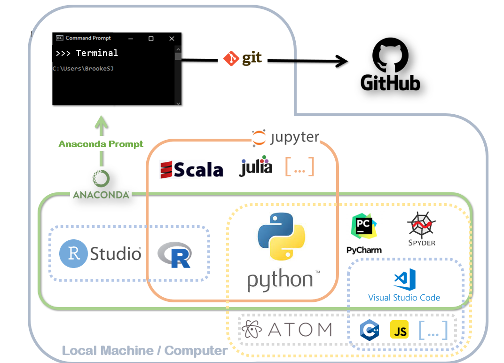

git clone <url> # Download online repository to local computer
git status # See status of files in repository
git add # Stage all changes made (alternatively add distinct file names to be staged)
git commit -m "some message describing edits" # save changes with a short description
git push # Upload local changes to remote repository
git pull # If files changed online, update local repository firstSeminar 1: Course Introduction- Solution
LSE ME314: Introduction to Data Science and Machine Learning
Plan for Today
Today, we’ll set up your workspace for the next three weeks. This includes installing all the necessary tools and understanding how your machine is structured. Our goal is to ensure you are fully equipped to work smoothly in both R and Python environments.
Map of Software Tools

Part 1: Setting up your Workspace
1.1 GitHub
GitHub provides Internet hosting for software development and version control using Git. It is the largest development platform in the world.
GitHub terminology
- Repository - a space for a project
- Fork - create a remote copy of a repository that you can modify
- Branch - a parallel version of the repository
- Pull request - ask changes to be merged
- Merge - incorporate changes (then delete branch)
Setting Up GitHub:
Go to the README.md file in the repository for Seminar 1 and follow the instructions there to set up your Git, GitHub and VS Code.
1. Exercise
Clone the ME314 repo if you haven’t done so already, which can be found at this link.
2. Exercise
Create a new repository on GitHub called “seminar01” by following these steps:
Go to https://github.com/
Click the “+” icon in the top right and select “New repository”
Name the repository
seminar01Make it private and and include a README and a
gitignorefile with the R template
3. Exercise
Using the command line (Terminal on a Mac/Linus or PowerShell/Command Prompt on a Windows PC), clone your repository to your computer, putting it inside the folder where you would like to store your local copies of your repositories for this course. Then, navigate into your newly cloned repository using cd /path/to/repositoryname and check the status of the repository.
Note: In the below, you should replace <path> with the path to whichever folder you would like to store your local copy of your repo. You should replace <url> with the HTTPS link to your GitHub repo.
cd <path>
git clone <url>
cd /path/to/directory
git status4. Exercise
Now, save this Quarto file, close it, and move it into your local copy of the GitHub repo you just created and cloned. After you have done this, reopen this file in VS Code. Also store copies of the two .csv datasets in your repo folder.
Next, stage all the files you just added to your local repo. Note: the dot tells git to stage all the files in the folder, not just a single file. The dot can be dangerous because you may unintentionally stage files you do not want to have on GitHub. Before staging all the files in the repo folder with the dot, check what’s in the folder by running the command ls in the terminal and check you are only staging files you want to save to GitHub. Once you’re satisfied stage as follows.
git add .Commit and push your changes to your repo, using “added seminar files” as your commit message.
git commit -m "saved qmd file and csv datasets"
git pushCheck on the GitHub website that this file now appears in your repository.
1.2 Quarto and VS Code
We will write our annotated R code using Quarto. Quarto files (.qmd) are plain text files written in markdown, which is a simple formatting syntax to generate HTML or PDF documents. While markdown can be used in a variety of file types (including most notably .md files, like READMEs on GitHub), Quarto allows you to embed chunks of R code (and other kinds of code!) that will run when you generate an HTML or PDF file.
The process of generating an HTML or PDF file from a Quarto document is called “rendering” it; for Rmarkdown, it is called “knitting” it. We refer to these compiled HTML or PDF files as “knitted HTML/PDF” or “rendered HTML/PDF”. You can knit/render your .qmd in VS Code using the Knit or Render button in the toolbar.
You can embed R or Python code in chunks like this one:
1 + 1[1] 2You can run each chunk of code one by one, by highlighting the code and clicking Run (or pressing Ctrl + Enter in Windows or command + enter in macOS). You will typically see the output of the code in the console below as well as inside the .qmd file.
Alternatively, you can knit/render an HTML or PDF document with all the formatted text, code, code comments, and output from your entire .qmd file by clicking on Render.
What is an IDE?
Integrated Development Environment are software applications that combine tools like a source code editor, build automation tools, and a debugger into a single, user-friendly interface for programmers to develope software and code. IDEs aim to streamline the development process, enhance productivity, and minimize coding errors.
Examples of IDEs:
- VS Code (lightweight, modular)
- RStudio (focused on R)
- PyCharm (focused on Python)
- JupyterLab (notebook-oriented, Julia, Python, R)
Installing VS Code
- Go to https://code.visualstudio.com/
- Select your OS
- Follow instructions
Installing Important VS Code Extensions
- Open the
Extensionspanel in VS Code by clicking on the icon in the left-hand toolbar - Search for the following extensions and install:
Pythonextension pack by MicrosoftRextension packR Syntaxextension packQuartoextension packGitHub Pull Requests and Issuesextension by GitHub
1.3 R
Why R?
- Currently used by many statisticians and social scientists interested in data analysis
- Open source: makes it highly customizable and easily extensible through “packages” (over 10,000 and counting!).
- Powerful tool to conduct automated text analysis, social network analysis, and data visualization, with packages such as quanteda, igraph or ggplot2
- Command-line interface and scripts favors reproducibility
- Excellent documentation and online help resources
Go to Cran and install R for your laptop.
1.4 Python
Why Python?
- Industry standard & broad adoption: Used by developers, data scientists, and researchers across fields—from web apps to machine learning to academic research.
- Open source & extensible: Thousands of libraries available via the Python Package Index (PyPI), making it easy to add functionality for everything from statistics to NLP to deep learning.
Using the command line to install python:
Windows:
winget install Python.Python.3Mac:
python3 --version- normally Python already installed on MacOSbrew install python
Then, install kernel for Python in Quarto.
Windows/Mac
pip install ipykernel/opt/homebrew/bin/python3 -m pip install ipykernel -U --user --force-reinstall
Check if Python and R are running:
In the panel on the bottom right side click on + and open a new terminal
Then, run the following commands in the new terminal
# If you're on macOS or Linux, run:
which python3
which R
which git
R --version
quarto check
# If you're on Windows (PowerShell), run:
where python
where R
where git
R --version
quarto check
Note
Information: Our quarto document is using R as the engine, and is trying to run a {python} chunk via reticulate. The reticulate package provides a comprehensive set of tools for interoperability between Python and R.
But we have not configured the default python environment yet. So let us do that now.
5. Exercise
Fill in the path to where python is stored on your machine.
library(reticulate)
use_python("/opt/homebrew/bin/python3", required = TRUE) # use base Python installationprint("Python code is running")Python code is runningFor the first time running a R chunk, you might be asked to install the languageserver package. So let us install the package by running the code below. You will be asked to select a CRAN mirror which should pop up as a separate window. Select the one in UK:London.
#install.packages("languageserver")
print("R code is running")[1] "R code is running"Check your current working directory in R (useful for importing datasets or files):
getwd() [1] "C:/Users/zhaom/Documents/GitHub/ME314/me314 midterm practice/seminar1"Part 2: Data Types in R and Python
Data Types in R:
R has many data types, but the most common ones we’ll use are:
- numeric:
1.1,3,317,Inf… - logical:
TRUEorFALSE - character:
this is a character,hello world!… - factor:
Democrat,Republican,Liberal, …
Building off of the data types we’ve learned, data structures combine multiple values into a single object. Some common data structures in R include:
- vectors:
c(1, 2, 3),c(TRUE, FALSE, TRUE),c("a", "b", "c")
- data frame:
data.frame(name = c("Alice", "Bob"), age = c(30, 25))
6. Exercise
Create R vectors for each data type. In a single R code chunk, write code that:
Creates a numeric vector called numeric_vector containing the values 3.14, 0, and Inf.
Creates a logical vector called logical_vector containing the values TRUE, FALSE, and NA.
Creates a character vector called character_vector containing the strings “apple”, “banana”, and “cherry”.
Creates a factor called factor_vector from the character vector c(“red”, “green”, “blue”, “green”).
numeric_vector <- c(3.14, 0, Inf)
print(numeric_vector)[1] 3.14 0.00 Inflogical_vector <- c(TRUE, FALSE, NA)
print(logical_vector)[1] TRUE FALSE NAcharacter <- c("apple", "banana", "cherry")
print(character)[1] "apple" "banana" "cherry"factor <- as.factor(c("red", "green", "blue", "green"))
print(factor)[1] red green blue green
Levels: blue green redData Types in Python:
Python has a number of built in data types:
float:
1.1,3.0,-2.5, …int:
3,317,-42, …str (string):
"hello",'world',"123", …bool (boolean):
True,Falsetuple:
(1, 2),('a', 'b'),(True, 3.14), …list:
[1, 2, 3],['apple', False],[3.14, 'x'], …dict (dictionary):
{'name': 'Alice', 'age': 30},{},{'x': 1, 'y': 2}, …
7. Exercise
In a single Python code cell, write a script that:
Assigns the float 3.14 to a variable float.
Assigns the integer 42 to a variable integer.
Assigns the string “hello world” to a variable string.
Then print out the type of each variable using type().
float = 3.14
print(type(float))<class 'float'>integer = 42
print(type(integer))<class 'int'>string = "hello world"
print(type(string))<class 'str'>Lists are used to store multiple items, not necessarily of the same type, in a single variable.
- Ordered
- can contain arbitrary objects
- Elements can be accessed by index
- Allow duplicates
- Can be nested
- Mutable
- Dynamic
my_list = ["dog", "cat", 1, 1.521, True]
my_list['dog', 'cat', 1, 1.521, True]Tuples are used to store multiple items in a single variable.
Tuples are unchangeable, meaning that we cannot change, add or remove items after the tuple has been created.
my_tuple = ("dog", "cat", 1, 1.521, True)
my_tuple('dog', 'cat', 1, 1.521, True)Part 3: Functional Programming and Control Flow
Functional Programming:
As we learned in the lecture, everything in R is an object, but most things happen via function calls. A lot of packages in R come with their own customized functions, but you can also define your own function.
Let us define a small helper function for us to work with: We want to write an R function triple() that takes a single numeric x and returns x * 3.
triple <- function(x) {
x * 3
}
triple(4)[1] 12In Python, we define functions—using the def keyword, a name, parameters in parentheses, and an indented body. When you call the function by name, you pass arguments into the parameters. Below you see an example of a function called is_prime() with the parameter n.
def is_prime(n):
"""
Return True if n is a prime number, False otherwise.
"""
if n <= 1:
return False
for i in range(2, int(n**0.5) + 1):
if n % i == 0:
return False
return True
# Examples
print(is_prime(2)) True8. Exercise
Create a function called square(x) that returns \(x \times x\). You may write it in R or Python. Then test your function on at least two values (e.g. 4 and 1.5) and print the results.
square <- function(x) {
x * x
}
# Test it
print(square(4)) # 16[1] 16print(square(1.5)) # 2.25[1] 2.25def square(x):
return x * x
# Test it
print(square(4)) # 1616print(square(1.5)) # 2.252.25Control Flow:
Control flow refers to the order in which the instructions of a program are executed. It determines how a program moves from one statement to another, based on certain conditions and decisions.
Using logical operators with “if” and “else” statements allows to run blocks of code depending on whether a logical condition is met or not, i.e. evaluates to true or false. It is used to execute a block of code only when a specific condition is met.
In R, “if” and “else” statements are used without indentation but with brackets instead:
x <- 4
if (x > 2) {
x <- x + 1
} else {
x <- x - 1
}
print(x)[1] 5
Important
Indentation: Unlike in R, where we are using curly and round brackets to structure the code, we work with indentation in Python.
9. Exercise
Translate the if condition above into Python code using indentation.
x = 4
if x > 2:
x = x + 1
else:
x = x - 1
print(x)5If, Elif, Else in Python
x = 4
# first if condition
# check if number is smaller than 2
if x < 2:
x = x + 1
print(x)
# second if condition
# check if number is greater than 5
elif x > 5:
x = x * 2
print(x)
# third if condition
# check if x is a string
if isinstance(x, str):
print("X is a string.")
# else statement
else:
print(x**2)16For loops in Python
myList = ["cat", "dog", "horse", "bird"]
for x in myList:
print(x)cat
dog
horse
bird10. Exercise
Use a for loop in Python to output the following:
1
2 2
3 3 3
4 4 4 4
5 5 5 5 5for i in [1, 2, 3, 4, 5]:
print((str(i) + ' ') * i)1
2 2
3 3 3
4 4 4 4
5 5 5 5 5 11. Exercise
Use a for loop in R to output the following:
1
2
3
4
5 for (i in 1:5) {
print(i)
}[1] 1
[1] 2
[1] 3
[1] 4
[1] 5By the end of this seminar you should be able to…
Manage repos with Git/GitHub (clone, commit, push)
Create & render Quarto documents with embedded R & Python code
Write basic R scripts (data types, functions, if/else, for‐loops)
Write basic Python scripts (data types, loops, conditionals)